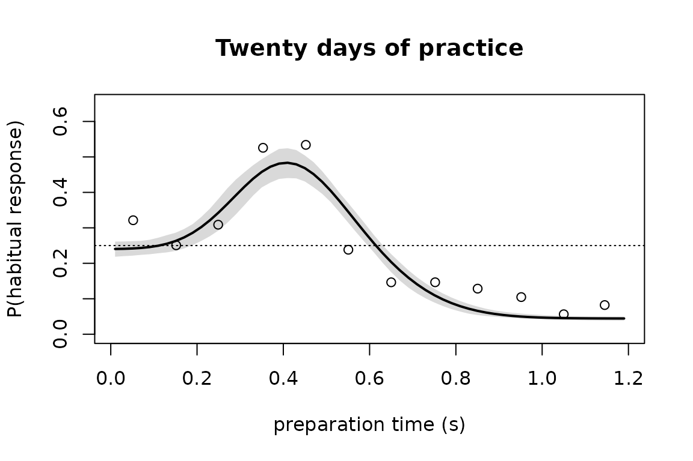

In 2017 the maintainer of this package left two requests on the analysis repository of a study he had helped run. An issue asked for a hierarchical version of the model, so that the parameters of each participant could borrow strength from the group; it was written as pseudo-code. A pull request added cleaned data and carried one open item, confidence bands on the fitted curves. Both are still open.
This case study answers both with frm(). It is also a
replication: the model below is a published one, first written in MATLAB
by other people, and the point of the exercise is to reach it exactly
rather than approximately.
The experiment
Participants learned a mapping from four symbols to four keys. They then learned a revised mapping in which two of the four symbols moved to a different key. In the assessment, a tone told them when to respond, which fixes the time they had to prepare. That preparation time is the covariate of interest.
The question is what happens when preparation time is short. If the original mapping is still available, it can win, and the participant presses the old key while intending the new one. That is the habit.
str(habit_prep)
#> 'data.frame': 28940 obs. of 10 variables:
#> $ participant : Factor w/ 36 levels "e1-01","e1-02",..: 1 1 1 1 1 1 1 1 1 1 ...
#> $ group : Factor w/ 3 levels "minimal","4day",..: 1 1 1 1 1 1 1 1 1 1 ...
#> $ subject_code: int 101 101 101 101 101 101 101 101 101 101 ...
#> $ trial : int 1 2 3 4 5 6 7 8 9 10 ...
#> $ prep_time : num 1.163 1.178 0.762 0.136 0.823 ...
#> $ remapped : logi TRUE TRUE TRUE TRUE FALSE FALSE ...
#> $ stimulus : int 3 4 3 3 1 2 1 2 4 2 ...
#> $ target_key : int 2 4 2 2 3 1 3 1 4 1 ...
#> $ response_key: int 2 4 2 1 3 1 4 2 1 1 ...
#> $ response : Factor w/ 3 levels "correct","habit",..: 1 1 1 3 1 1 3 3 3 1 ...Only the two remapped symbols offer a habitual response, so the model is fit to those trials:
dat <- subset(habit_prep, remapped & !is.na(response))
dat$response <- factor(dat$response, levels = c("correct", "habit", "other"))
with(dat, table(group, response))
#> response
#> group correct habit other
#> minimal 3777 616 1094
#> 4day 3379 1125 981
#> 20day 2149 776 570The three groups differ in how long the original mapping was
practiced before it was revised. minimal and
4day are the same people before and after four days of
training. 20day is a separate cohort trained for twenty
days.
The model
Two processes race to be ready. Process A prepares the original response, process B the revised one. Each becomes ready at a normally distributed time, so the probability that it is ready at preparation time is a normal CDF:
The two processes are independent, which gives four preparation states. A coefficient matrix turns those states into probabilities of the three response categories. Written out, with the accuracy of the goal-directed process and the guess rate:
Once B is ready it wins, whether or not A is also ready. That is why appears alone in the last term of each line. If A alone is ready, the participant emits the habitual response with probability , and that is what produces a transient bump in habitual errors at intermediate preparation times.
The original fits hold near 1, because it trades off against other parameters and is not separately identified. The published parameter counts treat it as fixed: four parameters for the model without a habit () and six with one (adding ). This vignette therefore fixes and counts the same way.
The model as a formula
The response has three categories, so the family is
categorical(). Its link is a softmax, and the model above
produces probabilities directly rather than linear predictors. The
softmax is invertible, so the way in is to hand it the log-ratios it
would have produced:
The factor of two is not a fudge. The other category
covers two keys, while
above is the probability of one of them. Doubling it makes the three
probabilities sum to one.
Each named quantity gets its own nlf() body. Bodies may
refer to each other, and frmtmb evaluates them in dependency order, so
the algebra can be laid out in the order a person would write it on
paper.
habit_model <-
bf(response ~ 1, family = categorical()) +
nlf(PhiA ~ pnorm((prep_time - muA) / sgA)) +
nlf(PhiB ~ pnorm((prep_time - muB) / sgB)) +
nlf(sgA ~ exp(lsgA)) +
nlf(sgB ~ exp(lsgB)) +
nlf(qB ~ 0.5 + 0.4999 / (1 + exp(-lqB))) +
nlf(qI ~ 0.499 / (1 + exp(-lqI))) +
nlf(c1 ~ qI*(1-PhiA)*(1-PhiB) + ((1-0.99)/3)*PhiA*(1-PhiB) + qB*PhiB) +
nlf(c2 ~ qI*(1-PhiA)*(1-PhiB) + 0.99*PhiA*(1-PhiB) + ((1-qB)/3)*PhiB) +
nlf(c3 ~ (0.5-qI)*(1-PhiA)*(1-PhiB) + ((1-0.99)/3)*PhiA*(1-PhiB) +
((1-qB)/3)*PhiB) +
nlf(muhabit ~ log(c2 / c1)) +
nlf(muother ~ log(2 * c3 / c1)) +
lf(muA ~ 1, lsgA ~ 1, muB ~ 1, lsgB ~ 1, lqB ~ 1, lqI ~ 1)Two details are worth pointing out.
pnorm is written bare. From frmtmb 0.48.0 a non-linear
body is evaluated in a scope where the automatic-differentiation
versions of the maths functions are already visible, so a body no longer
needs an RTMB:: prefix to keep its derivatives.
The standard deviations and the two probabilities are bounded by
writing a link into the body, not by asking the fitter for a box.
sgA is the exponential of a free parameter, so it is
positive by construction, and qI is a scaled logistic, so
it stays inside its interval. This keeps every free parameter on an
unbounded scale, which is what the random effects in the next section
need.
The version without a habit is the same model with process A removed. then drops out of the algebra and the model collapses to guessing until B is ready:
nohabit_model <-
bf(response ~ 1, family = categorical()) +
nlf(PhiB ~ pnorm((prep_time - muB) / sgB)) +
nlf(sgB ~ exp(lsgB)) +
nlf(qB ~ 0.5 + 0.4999 / (1 + exp(-lqB))) +
nlf(qI ~ 0.499 / (1 + exp(-lqI))) +
nlf(c1 ~ qI*(1-PhiB) + qB*PhiB) +
nlf(c2 ~ qI*(1-PhiB) + ((1-qB)/3)*PhiB) +
nlf(c3 ~ (0.5-qI)*(1-PhiB) + ((1-qB)/3)*PhiB) +
nlf(muhabit ~ log(c2 / c1)) +
nlf(muother ~ log(2 * c3 / c1)) +
lf(muB ~ 1, lsgB ~ 1, lqB ~ 1, lqI ~ 1)One fit per participant
The published analysis fits every participant separately. Starting values matter for a model with this much structure, so they are given by name:
start_habit <- list(beta = c(
`muA_(Intercept)` = 0.4, `lsgA_(Intercept)` = log(0.05),
`muB_(Intercept)` = 0.5, `lsgB_(Intercept)` = log(0.05),
`lqB_(Intercept)` = 2, `lqI_(Intercept)` = 0))
start_nohabit <- list(beta = start_habit$beta[
c("muB_(Intercept)", "lsgB_(Intercept)", "lqB_(Intercept)", "lqI_(Intercept)")])One participant, to show the shape of a single fit:
one <- droplevels(subset(dat, group == "20day" & participant == "e2-01"))
fit_one <- frm(habit_model, data = one, start = start_habit)
unlist(fixef(fit_one))
#> muA.(Intercept) lsgA.(Intercept) muB.(Intercept) lsgB.(Intercept)
#> 0.3173808 -6.7284629 0.4028061 -1.9174794
#> lqB.(Intercept) lqI.(Intercept)
#> 1.3308187 0.1687494muA below muB is the habit geometry: the
original response is ready before the revised one, so there is a window
in which it can win.
Every participant in every group is a small fit, so the whole set runs here rather than being quoted from a table:
cells <- unique(dat[c("group", "participant")])
cells <- cells[order(cells$group, cells$participant), ]
per_subject <- do.call(rbind, lapply(seq_len(nrow(cells)), function(i) {
s <- droplevels(dat[dat$group == cells$group[i] &
dat$participant == cells$participant[i], ])
fh <- suppressWarnings(frm(habit_model, data = s, start = start_habit))
fn <- suppressWarnings(frm(nohabit_model, data = s, start = start_nohabit))
data.frame(group = cells$group[i], participant = cells$participant[i],
n = nrow(s), dAIC = AIC(fn) - AIC(fh))
}))dAIC is AIC without a habit minus AIC with one, so a
positive value favors the habit model:
tapply(per_subject$dAIC, per_subject$group,
function(x) c(favoring_habit = sum(x > 0), n = length(x),
mean_dAIC = round(mean(x), 2)))
#> $minimal
#> favoring_habit n mean_dAIC
#> 3.00 22.00 -2.36
#>
#> $`4day`
#> favoring_habit n mean_dAIC
#> 15.0 22.0 6.8
#>
#> $`20day`
#> favoring_habit n mean_dAIC
#> 13.00 14.00 20.35That is the paper’s headline pattern. Habit is favored for almost every participant after twenty days of practice, for most after four days, and for few after minimal practice. The counts are close to the published ones rather than identical to them, because this vignette fixes instead of fitting it inside a narrow box, and drops a ridge penalty on the two preparation-time standard deviations that the original objective carried. Neither changes the verdict for any group.
One fit per group instead of one per participant
Fitting each participant alone throws away the fact that participants resemble each other. The 2017 issue asked for the alternative: let the preparation-time parameters vary by participant, and estimate the spread rather than assuming it away.
(1 | p | participant) on four of the parameters gives
each participant an offset on each, and the shared p label
collects the four into one unstructured covariance block, so the offsets
are allowed to correlate. The asymptote and guess parameters stay
pooled, because they are weakly identified within one participant.
habit_hier <-
bf(response ~ 1, family = categorical()) +
nlf(PhiA ~ pnorm((prep_time - muA) / sgA)) +
nlf(PhiB ~ pnorm((prep_time - muB) / sgB)) +
nlf(sgA ~ exp(lsgA)) +
nlf(sgB ~ exp(lsgB)) +
nlf(qB ~ 0.5 + 0.4999 / (1 + exp(-lqB))) +
nlf(qI ~ 0.499 / (1 + exp(-lqI))) +
nlf(c1 ~ qI*(1-PhiA)*(1-PhiB) + ((1-0.99)/3)*PhiA*(1-PhiB) + qB*PhiB) +
nlf(c2 ~ qI*(1-PhiA)*(1-PhiB) + 0.99*PhiA*(1-PhiB) + ((1-qB)/3)*PhiB) +
nlf(c3 ~ (0.5-qI)*(1-PhiA)*(1-PhiB) + ((1-0.99)/3)*PhiA*(1-PhiB) +
((1-qB)/3)*PhiB) +
nlf(muhabit ~ log(c2 / c1)) +
nlf(muother ~ log(2 * c3 / c1)) +
lf(muA ~ 1 + (1 | p | participant), muB ~ 1 + (1 | p | participant),
lsgA ~ 1 + (1 | p | participant), lsgB ~ 1 + (1 | p | participant),
lqB ~ 1, lqI ~ 1)The twenty-day group, fit here:
d20 <- droplevels(subset(dat, group == "20day"))
fit_20 <- suppressWarnings(frm(habit_hier, data = d20, start = start_habit))
unlist(fixef(fit_20))
#> muA.(Intercept) muB.(Intercept) lsgA.(Intercept) lsgB.(Intercept)
#> 0.40444680 0.51971184 -2.51584125 -2.05038254
#> lqB.(Intercept) lqI.(Intercept)
#> 1.33963189 0.06858932
VarCorr(fit_20)
#> muA: 1 | participant + muB: 1 | participant + lsgA: 1 | participant + lsgB: 1 | participant [ID]
#> Name Std.Dev. Corr.response.muA:(Intercept)
#> response.muA:(Intercept) 0.11640
#> response.muB:(Intercept) 0.12021 0.948
#> response.lsgA:(Intercept) 0.78253 0.888
#> response.lsgB:(Intercept) 0.59146 0.608
#> Corr.response.muB:(Intercept) Corr.response.lsgA:(Intercept)
#>
#>
#> 0.937
#> 0.677 0.889The correlations are the part the per-participant analysis could not produce. A participant whose habitual response is ready early also tends to have the revised response ready early, which reads as a single per-person speed of preparation. That is a hypothesis the original analysis had no way to state.
Comparing the two models
The same fits for every group, with and without a habit, are
precomputed because the six of them together take longer than a vignette
should. The script that produces them is
data-raw/habit_hierarchical.R, and it uses several starting
values per fit, because the likelihood surface for this model has more
than one local optimum:
hier <- read.csv(system.file("extdata", "habit-hierarchical.csv",
package = "frmtmb"))
hier[c("group", "n_trials", "n_subj", "logLik_habit", "logLik_nohabit", "dAIC")]
#> group n_trials n_subj logLik_habit logLik_nohabit dAIC
#> 1 minimal 5487 22 -3289.116 -3305.021 13.81183
#> 2 4day 5485 22 -4124.705 -4258.574 249.73792
#> 3 20day 3495 14 -2572.104 -2698.921 235.63367The groups hold different numbers of trials, so the raw
dAIC values are not comparable between them. Per trial they
are:
round(hier$dAIC / hier$n_trials, 4)
#> [1] 0.0025 0.0455 0.0674That ordering is the paper’s claim. The evidence for a habit process grows with the amount of practice that preceded the remapping, and the gap between minimal practice and either trained group is an order of magnitude.
Note that this is an AIC comparison and not a likelihood-ratio test.
The two models are not nested. Collapsing the habit model onto the
no-habit model needs
,
and
is fixed near 1 while
is near a quarter, so no setting of the parameters turns one into the
other. anova() on a pair of frmtmb fits checks that they
share a number of observations, not that they are nested, so it would
return a confident-looking p-value here. Choosing a legitimate pair is
the analyst’s job.
The minimal-practice group deserves a caution. Its dAIC
is positive, so the hierarchical comparison mildly prefers the habit
model, while the per-participant comparison above does not. Partial
pooling lets a weak, shared signal survive that individual fits cannot
resolve. On a per-trial basis the effect is very small, and it is
nothing like the twenty-day result. The disagreement is worth reporting
rather than resolving by picking the analysis that reads better.
A band on the fitted curve
The open item on the 2017 pull request asked for confidence bands.
frm_bootstrap() takes a function of a refitted model, so
passing it a function that evaluates the fitted curve gives a band on
the curve rather than on the parameters:
grid <- seq(0.01, 1.2, by = 0.02)
habit_curve <- function(f) {
p <- lapply(fixef(f), unname)
PhiA <- pnorm((grid - p$muA) / exp(p$lsgA))
PhiB <- pnorm((grid - p$muB) / exp(p$lsgB))
qB <- 0.5 + 0.4999 / (1 + exp(-p$lqB))
qI <- 0.499 / (1 + exp(-p$lqI))
c1 <- qI*(1-PhiA)*(1-PhiB) + ((1-0.99)/3)*PhiA*(1-PhiB) + qB*PhiB
c2 <- qI*(1-PhiA)*(1-PhiB) + 0.99*PhiA*(1-PhiB) + ((1-qB)/3)*PhiB
c3 <- (0.5-qI)*(1-PhiA)*(1-PhiB) + ((1-0.99)/3)*PhiA*(1-PhiB) +
((1-qB)/3)*PhiB
c2 / (c1 + c2 + 2 * c3) # probability of the habitual response
}
pooled_20 <- frm(habit_model, data = d20, start = start_habit)
set.seed(1)
band <- frm_bootstrap(pooled_20, FUN = habit_curve, nsim = 100)
ci <- confint(band)
obs <- with(subset(d20, prep_time > 0 & prep_time < 1.2), {
b <- cut(prep_time, breaks = seq(0, 1.2, by = 0.1))
data.frame(t = tapply(prep_time, b, mean),
p = tapply(response == "habit", b, mean))
})
plot(grid, habit_curve(pooled_20), type = "n", ylim = c(0, 0.65),
xlab = "preparation time (s)", ylab = "P(habitual response)",
main = "Twenty days of practice")
polygon(c(grid, rev(grid)), c(ci[, 1], rev(ci[, 2])),
col = "grey85", border = NA)
lines(grid, habit_curve(pooled_20), lwd = 2)
points(obs$t, obs$p)
abline(h = 0.25, lty = 3)
The dotted line is the guess rate. The curve rises well above it and comes back down, which is the transient the model exists to describe: for a window of a few hundred milliseconds the trained response is ready and the intended one is not.
What to take away
The non-linear grammar reaches a real published model, one written by other people in another language, without a change of variable that the model itself did not already contain.
nlf() is the tool that gets there. A
categorical() family cannot be given
nl = TRUE, because that requires a family with a single
mean parameter. Naming the distributional parameters directly with
nlf() sidesteps that, and lets a multi-category likelihood
be written as algebra.
A hard-wired link is not an obstacle when it is invertible. The softmax was driven through its own inverse here, which cost one logarithm per category.
Bounds written as links in the body keep every parameter on an unbounded scale. That is a stylistic choice for a fixed-effect fit and a requirement once the parameter carries a random effect.
Finally, the hierarchical model answers a question the per-participant analysis could not ask. Three fits replace fifty-eight, the spread between participants becomes a parameter rather than a nuisance, and the correlations between preparation-time parameters become visible.